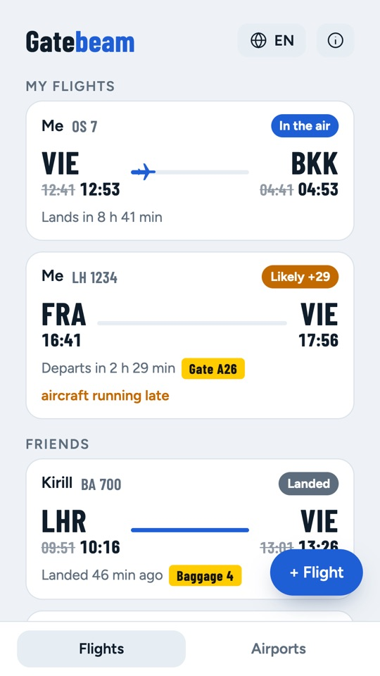
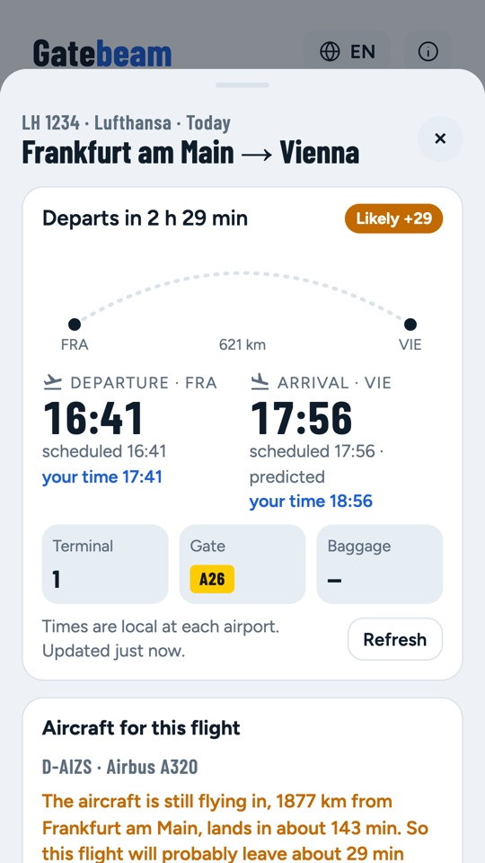
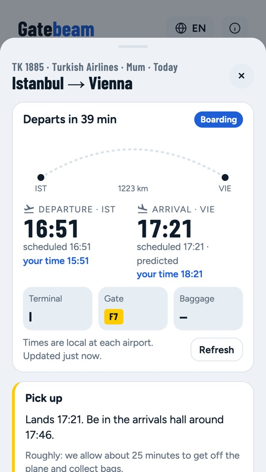
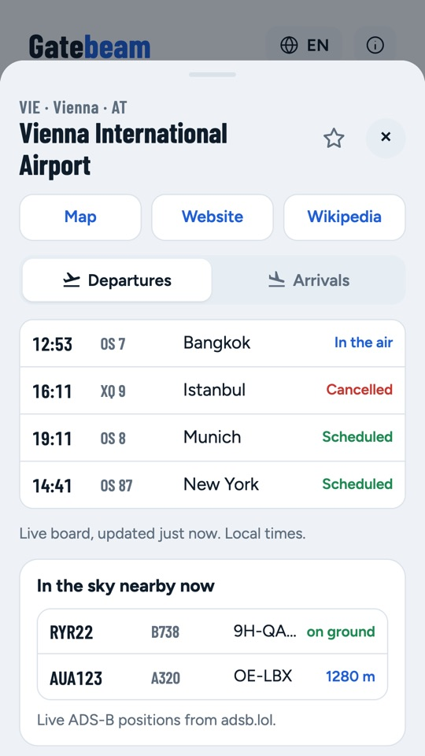

Gatebeam
Flight tracker · Support
Gatebeam keeps your flights and those of family and friends in one calm list: status, gate, baggage belt, how the flight did last week, and where the aircraft is right now. No account, no ads, your flights stay on your phone.




Contact
Questions, bugs or ideas: support@calmappslab.com. We usually reply within two working days.
Questions
Where does the data come from? Flight status and airport boards from AeroDataBox, live aircraft positions from the ADS-B network adsb.lol, airports from OurAirports.
Why does a delay show before the airline announces it? Gatebeam looks at where the aircraft for your flight is. If it is still far away shortly before departure, it cannot leave on time. This is an estimate, the airline's information is what counts.
Is it an official airline app? No. Gatebeam is independent and not affiliated with any airline or airport.
How do I delete my data? Remove a flight with "Stop tracking", or uninstall the app. Nothing is stored anywhere else.